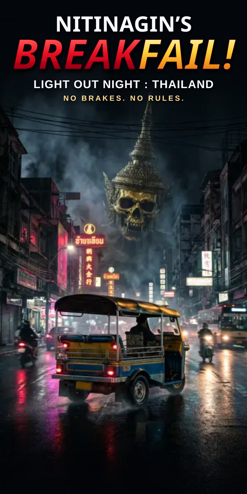

V6.7 — NEON NIGHT DRIVE
LIGHT OUT NIGHT : THAILAND
NO BRAKES. NO RULES.
📱 TILT LEFT OR RIGHT to steer and dodge traffic.
👆 NO MOTION SENSOR? Drag left or right on the road to steer.
⌨️ DESKTOP: Use ← → or A / D keys.
🎯 Tap recenter to reset your steering position.
On iPhone, tap Allow if asked for Motion & Orientation access.